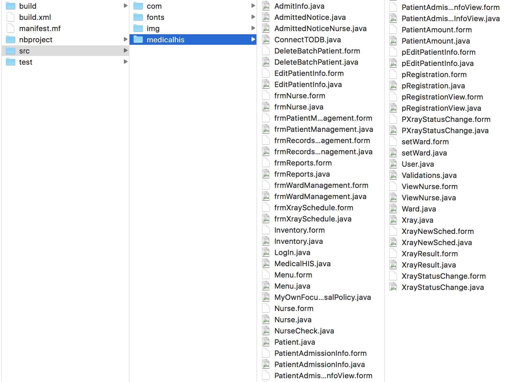

-
Stage 1:
ProposalIntroduction
This Medical Hospital is chosen for the reason that the project team wanted to provide an automated system that may be able to provide integration to the different departments that was specified in the scope. Since this hospital still uses the traditional paper based system, they have to manage various hospital information and the occurrence of human errors are inevitable anyhow. During the primary investigation of the project team, they have seen that there is an opportunity in providing improvement for the hospital seeing that the hospital personnel went through a lot of inconvenience in having access to the information needed by different departments. As defined online in the Industry Reports of the Asian Hospital and Healthcare Management(2006), a hospital information system is an automated system that is designed to manage the different aspects of information in terms of its' clinical, financial and operational management. In fact, the selected system is being chosen seeing that this system will be able to meet the needs of the hospital.
-
Systems Development Methodology
The project team has chosen the Agile Methodology for it contains highly iterative development in providing quality services. Since customers (in this case, the patients) are given the highest priority first, continuous feedback are given importance for the reason that there can be frequent changes in the needs of the hospital as time passes by. And this methodology is used In order to come up with a system that fits the hospital's needs.
“Agile Software Development Methods: Review and Analysis” by Abrahamsson, Salo, Ronkainen, and Warsta.

-
Scope & Limitations
The project will only deal with the Pharmacy Department, Nursing Stations, Emergency Room (ER) Department, Records Department, and Admitting Department. All other departments will notbe included. However, the Laboratory and X-Ray Department will be mentioned asa sender and receiver of someinformation, but will not be further discussed because they are only external entities.
The processes included are admission process, discharge process, medicine procurement process, and records filing process which all takes a part ontracking the recordofpatients. -
Stage 2:
System
PrototypeObjectives
This system aims to track the patients’admission through a centralized system by connecting the different departments necessary in the processes of tracking the patient’s records to be able to increase the speed of the transactions and lessen human errors.
1. Increase the speed ofthe transactions for the satisfaction of the patients.
2. Improve effective patient health care
3. lessen human errors by having a centralized system and electronic forms and reports.
4. Reduce redundancy of data in the hospital.
5. Easily add, edit, or delete patient’s records. -
System Module
1. Patient Registration and Admission Module
2. Outpatient Management Module
3. Records Management Module
4. Nursing Stations Module
5. Pharmacy Transaction Management Module
6. Laboratory Module
7. Ward Allocation Module
8. Billing/Computation Module
-
System Design and Coding
1. Programming Languange: Java
1. Database: MySQL Server
3. Programming Tools: Netbeans
-
Stage 3:
Final
SystemSystem

Medical CIS
A Clinical Information System maximizes the utilization of patient information for medical care
My Team
"Group of Young People Who Love to Make Things Happen"

Aimee Abalos
"Lead Engineer/Designer who stays hungry eager to learn and try everything"
 Gilynne Abby Pua
Gilynne Abby Pua
"A Developer who trust in opportunity comes to all who make great efforts"
 Paulina Isaac
Paulina Isaac
"A Test Analysist/Future Writer who likes to play around words & letters."
 Pananalig Bautista
Pananalig Bautista
"A smart System Designer who holds an opinion to work smart."